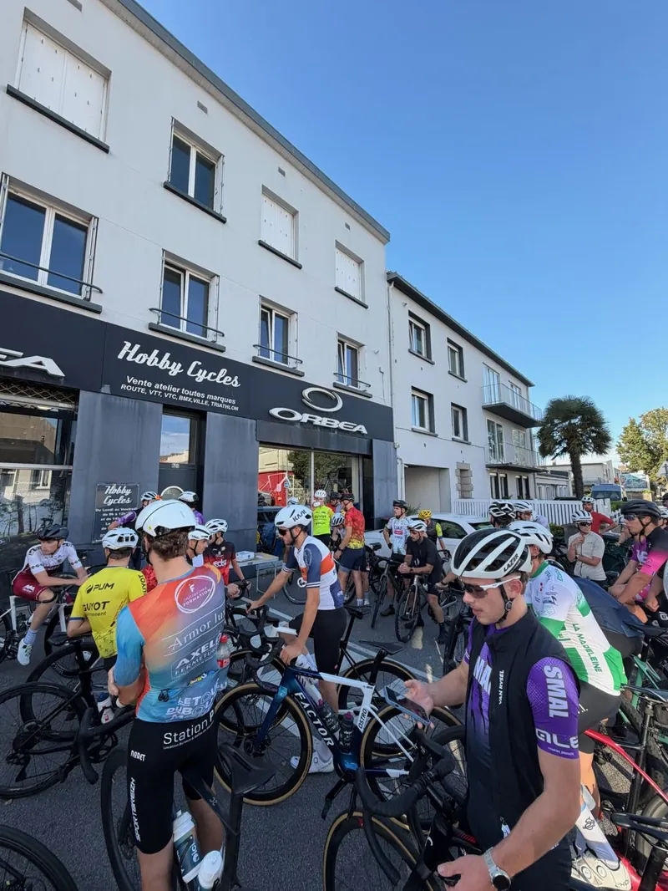
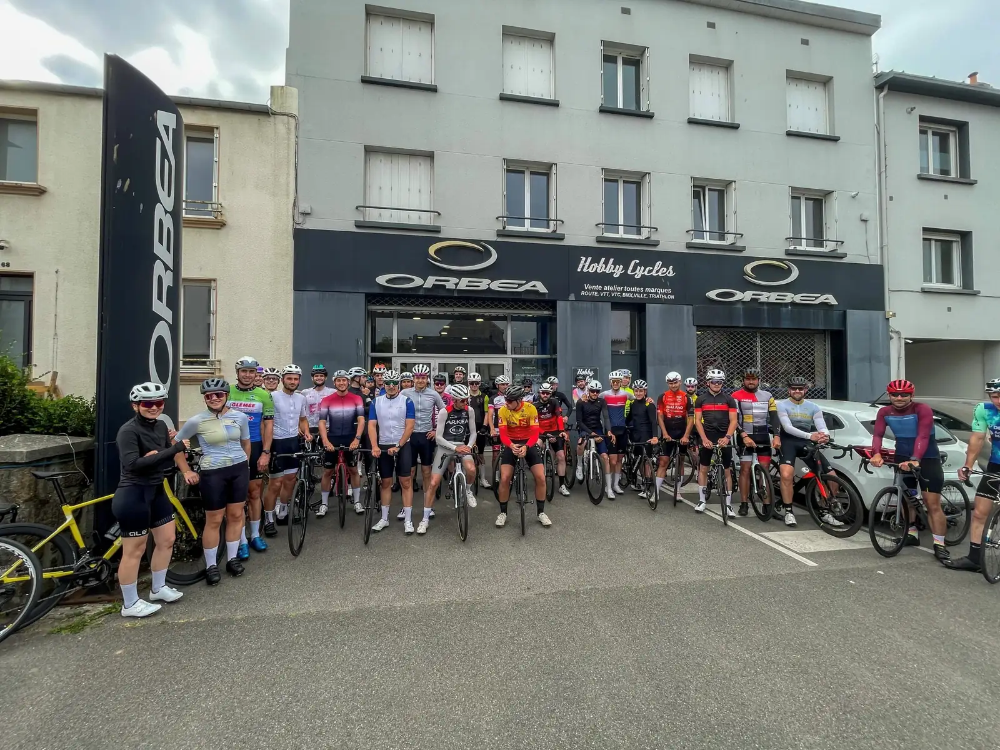
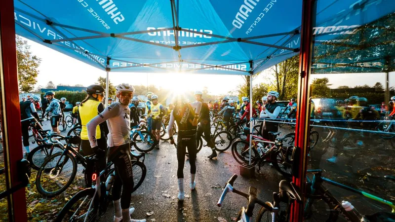
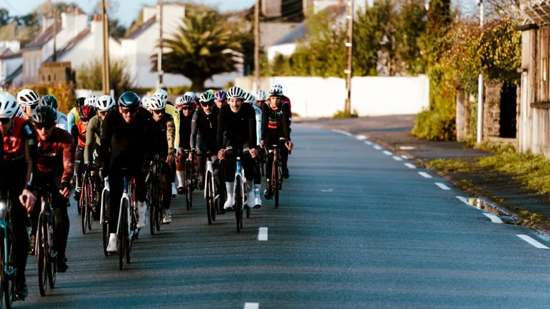
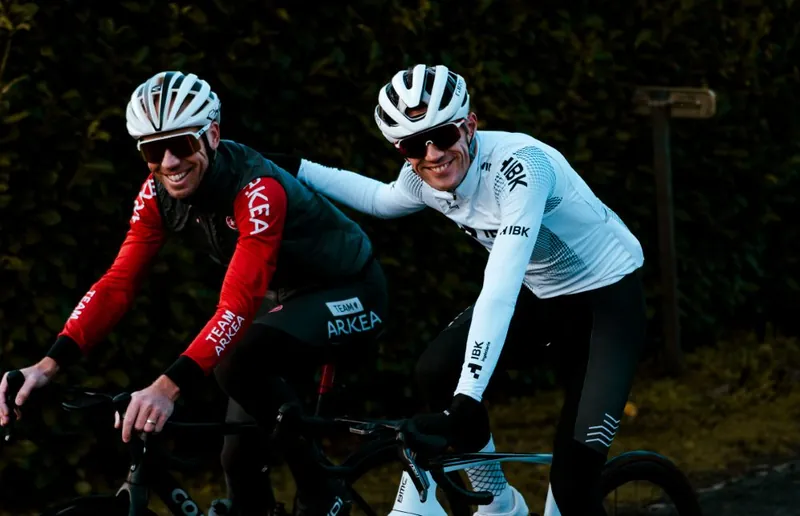
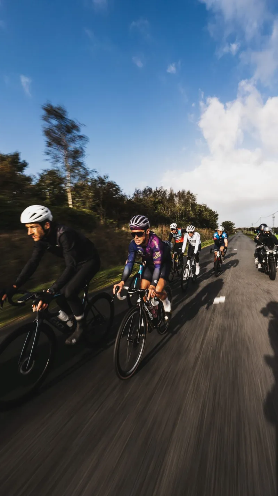
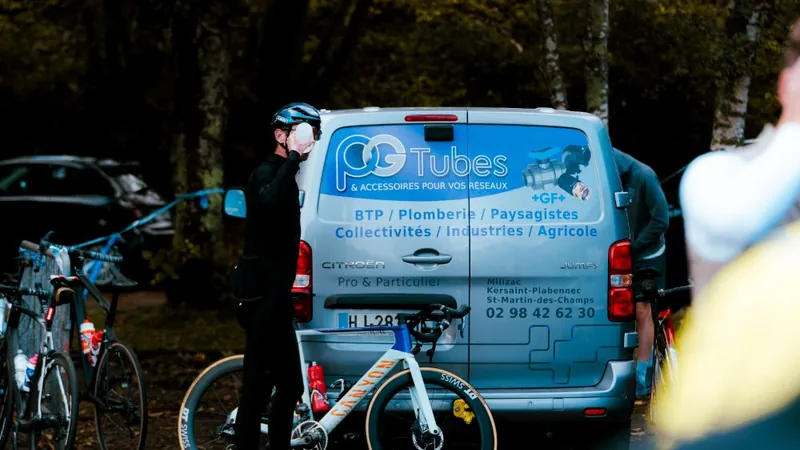
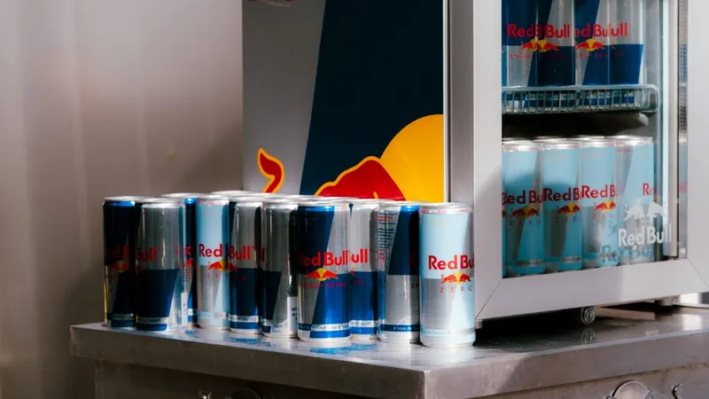
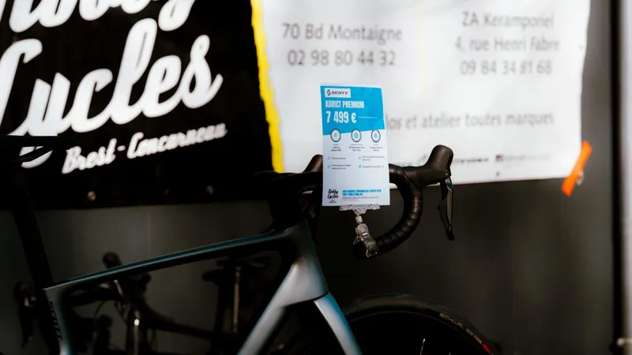

Les Social Rides estivaux SMAL & CO
- Éditions
- 9
- Moyenne
- 50 personnes
- Record
- 70 personnes
Rassemblements cyclistes estivaux organisés toutes les deux semaines au départ de Hobby Cycles à Brest. Ouverts à tous, conviviaux et rythmés.




Communauté · Événements
Des rendez-vous qui rassemblent, et nos couleurs portées sur ceux des autres.
Nos missions
Organiser des événements ouverts à tous, qui donnent envie de rouler et de courir ensemble, quel que soit le niveau.
Représenter le club sur les épreuves régionales et nationales, et les raconter en images.
Faire vivre nos partenaires sur le terrain : village, animations, visibilité.
Organisation
Rassemblements cyclistes estivaux organisés toutes les deux semaines au départ de Hobby Cycles à Brest. Ouverts à tous, conviviaux et rythmés.

100 cyclistes réunis sur les routes bretonnes. Un succès populaire et une organisation complète portée par le club et ses bénévoles.
Voir les parcours et détails sur CycloPass







À venir
De nouveaux rendez-vous se préparent sur le bassin brestois. Le calendrier sera annoncé sur nos réseaux.
Événement, parcours, défi ou projet commun : venez nous en parler et suivez toutes les coulisses sur nos réseaux officiels.